coin-0001
Mixed silver coins on a galaxy mat
DC73F1B8-76AE-4453-B2DE-C8BFDFB8449F.jpegcataloged_requires_crop_review
46 original photographs and 1 video. Originals preserved. Labels describe visible evidence, not authentication.
Mixed silver coins on a galaxy mat
DC73F1B8-76AE-4453-B2DE-C8BFDFB8449F.jpegcataloged_requires_crop_review

Mixed rounds and coins in capsules
IMG_0036.jpegcataloged_requires_crop_review

2021 American Eagle reverse proof designer set
IMG_0977.jpegused_verified_coin_evidence

Mixed coins in transparent album pockets
IMG_0994.jpegcataloged_requires_crop_review

Seven silver dollar type coins near a keyboard
IMG_2014.jpegcataloged_requires_crop_review

Morgan dollar reverse; prior O mint mark identification withdrawn
IMG_3431.jpegrequires_identity_reverification_before_new_claims

1900 Morgan dollar obverse in holder; mint attribution unverified
IMG_3433.jpegrequires_identity_reverification_before_new_claims

Morgan dollar reverse in holder
IMG_3435.jpegcataloged_requires_crop_review

1885 O Morgan dollar obverse in labeled holder
IMG_3437.jpegcataloged_requires_crop_review

1904 O Morgan dollar obverse in labeled holder
IMG_3441.jpegcataloged_requires_crop_review

Morgan dollar reverse with O mint mark
IMG_3443.jpegcataloged_requires_crop_review

1881 S Morgan dollar obverse in labeled holder
IMG_3445.jpegcataloged_requires_crop_review

2021 Silver Eagle Type Two obverse in labeled holder
IMG_3449.jpegcataloged_requires_crop_review

Silver Eagle flying eagle reverse in holder
IMG_3451.jpegcataloged_requires_crop_review

Silver Eagle holder and handwritten sales note
IMG_3452.jpegcataloged_requires_crop_review

Silver dollars in a coin album
IMG_3488.jpegcataloged_requires_crop_review

Walking Liberty half dollar in holder
IMG_3680.jpegcataloged_requires_crop_review

Walking Liberty eagle reverse in holder
IMG_3681.jpegcataloged_requires_crop_review

Walking Liberty half dollar obverse beside stamp
IMG_3729.jpegcataloged_requires_crop_review

Walking Liberty half dollar obverse close view
IMG_3730.jpegcataloged_requires_crop_review

Carver-Washington commemorative half dollar obverse
IMG_3733.jpegused_verified_coin_evidence

Walking Liberty half dollar eagle reverse
IMG_3734.jpegcataloged_requires_crop_review

Mixed bullion pieces in capsules
IMG_4407.jpegcataloged_requires_crop_review

Mixed bullion rounds and novelty bars
IMG_4418.jpegcataloged_requires_crop_review

Mixed rounds and Coca Cola branded bar
IMG_4419.jpegcataloged_requires_crop_review

Bag of coins with two loose silver dollar type coins
IMG_4469.jpegcataloged_requires_crop_review

Coin albums and mixed collection overview
IMG_4553.jpegcataloged_requires_crop_review

Coin folder and encapsulated silver dollar type coins
IMG_4691.jpegcataloged_requires_crop_review

Five silver dollar type coins on dark surface
IMG_4696.jpegcataloged_requires_crop_review

Coin packaging bullion card and loose coins
IMG_4711.jpegcataloged_requires_crop_review

1925 Vancouver commemorative half dollar fort reverse
IMG_5735.jpegcataloged_requires_crop_review

1925 Vancouver commemorative half dollar John McLoughlin obverse
IMG_5736.jpegcataloged_requires_crop_review

1896 Morgan dollar obverse with sales note
IMG_6643.jpegcataloged_requires_crop_review

Morgan dollar in capsule angled lighting
IMG_6644.jpegcataloged_requires_crop_review

Morgan dollar in capsule alternate lighting
IMG_6645.jpegcataloged_requires_crop_review

Morgan dollar reverse with sales note
IMG_6646.jpegcataloged_requires_crop_review

Kennedy half dollar obverses on laptop
IMG_6648.jpegused_verified_coin_evidence

Mixed Morgan and Peace dollar type coins alternate view
IMG_6649.jpegcataloged_requires_crop_review

Screenshot of Vancouver commemorative reverse
IMG_7596.jpegreference_only_screenshot

Mixed coin container on digital scale
IMG_7819.jpegcataloged_requires_crop_review

Mixed coins spread on table
IMG_7820.jpegcataloged_requires_crop_review

Mixed coin container and labeled package on scale
IMG_7821.jpegcataloged_requires_crop_review

Wrapped silver dollar auction sample, marked unarrived
codex-clipboard-a3097025-d94d-4295-bf61-fd3a8a56b823.jpgcataloged_requires_crop_review

Morgan dollar stack and loose coins
codex-clipboard-4179addb-1a77-4fe4-a56a-baef078391de.jpgcataloged_requires_crop_review

1887 Morgan dollar obverse in wrapper
codex-clipboard-a9b0a061-e6b0-4cc4-971d-73b325586630.jpgcataloged_requires_crop_review

Morgan dollar reverse in wrapper
codex-clipboard-aaaaac7a-0cca-4d00-9805-5e55a6c94266.jpgcataloged_requires_crop_review
18 reviewed compositions. Use within Fused blog and reel content with each fact label, source credit, rights scope and specimen limitation intact. These are not stand-alone stock images.
Same Liberty? Different coin.
owner coin photograph in verified comparison treatment
Fused-owned blog, reel, and future coin-history graphics; keep the accompanying fact labels and specimen limitations. Owner photo reuse for Fused content; no standalone or public stock redistribution grant.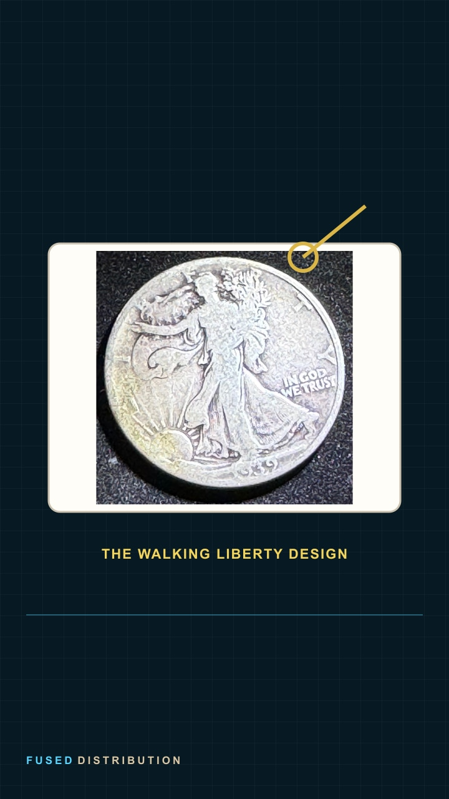
Start with the half dollar.
owner coin photograph in verified comparison treatment
Source coins: coin-0020
Fused-owned blog, reel, and future coin-history graphics; keep the accompanying fact labels and specimen limitations. Owner photo reuse for Fused content; no standalone or public stock redistribution grant.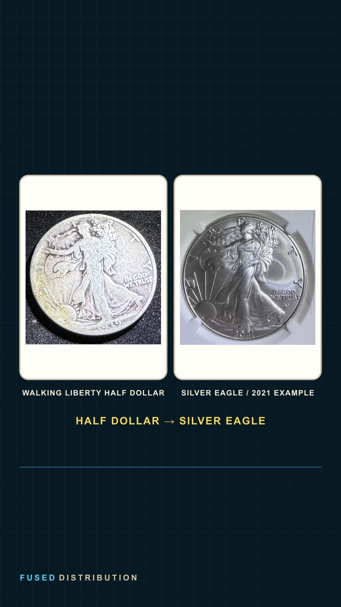
Follow the design across eras.
owner coin photograph in verified comparison treatment
Fused-owned blog, reel, and future coin-history graphics; keep the accompanying fact labels and specimen limitations. Owner photo reuse for Fused content; no standalone or public stock redistribution grant.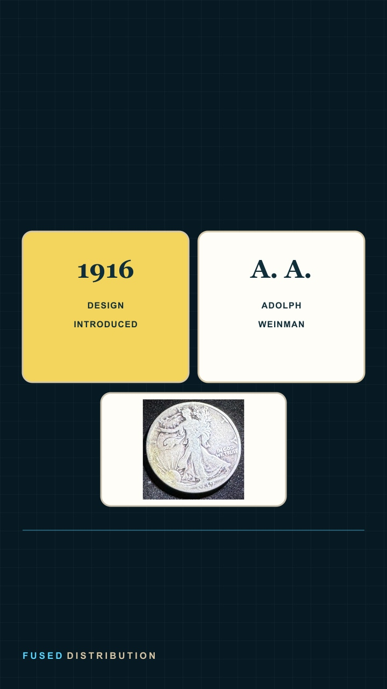
Design debut: 1916
sourced explainer graphic, not a coin photograph
Source coins: coin-0020
Fused-owned blog, reel, and future coin-history graphics; keep the accompanying fact labels and specimen limitations. Owner photo reuse for Fused content; no standalone or public stock redistribution grant.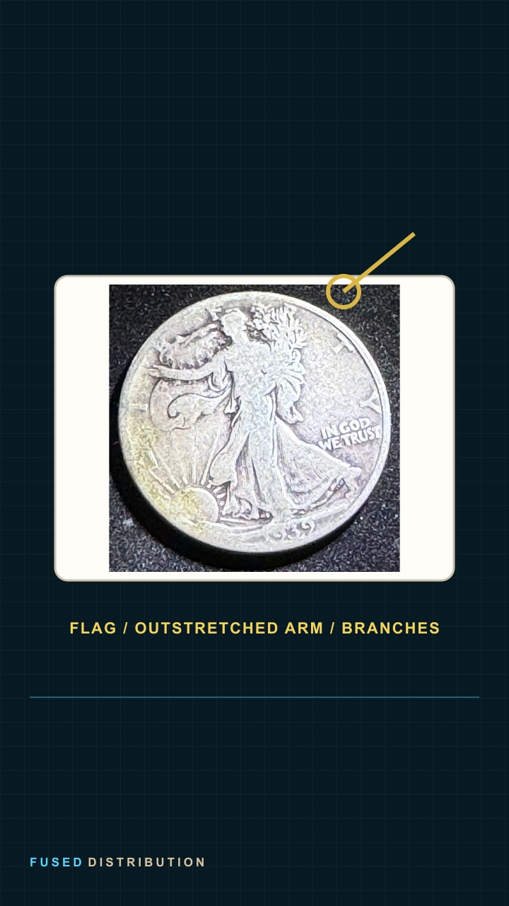
Liberty in full stride.
owner coin photograph in verified comparison treatment
Source coins: coin-0020
Fused-owned blog, reel, and future coin-history graphics; keep the accompanying fact labels and specimen limitations. Owner photo reuse for Fused content; no standalone or public stock redistribution grant.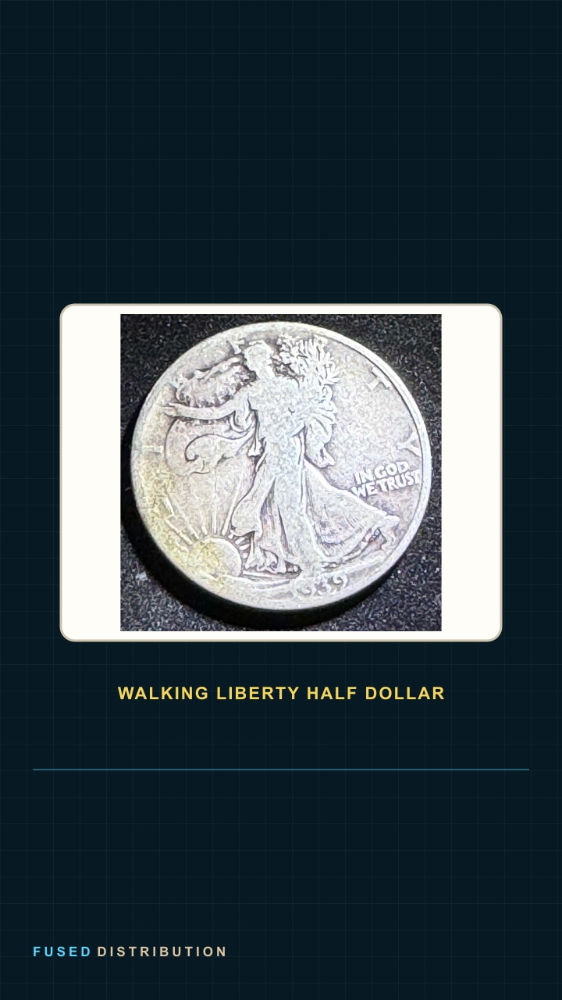
The half dollar carries the image.
owner coin photograph in verified comparison treatment
Source coins: coin-0020
Fused-owned blog, reel, and future coin-history graphics; keep the accompanying fact labels and specimen limitations. Owner photo reuse for Fused content; no standalone or public stock redistribution grant.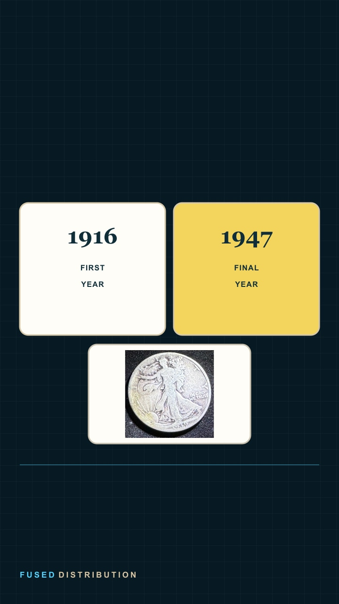
The run ends: 1947
sourced explainer graphic, not a coin photograph
Source coins: coin-0020
Fused-owned blog, reel, and future coin-history graphics; keep the accompanying fact labels and specimen limitations. Owner photo reuse for Fused content; no standalone or public stock redistribution grant.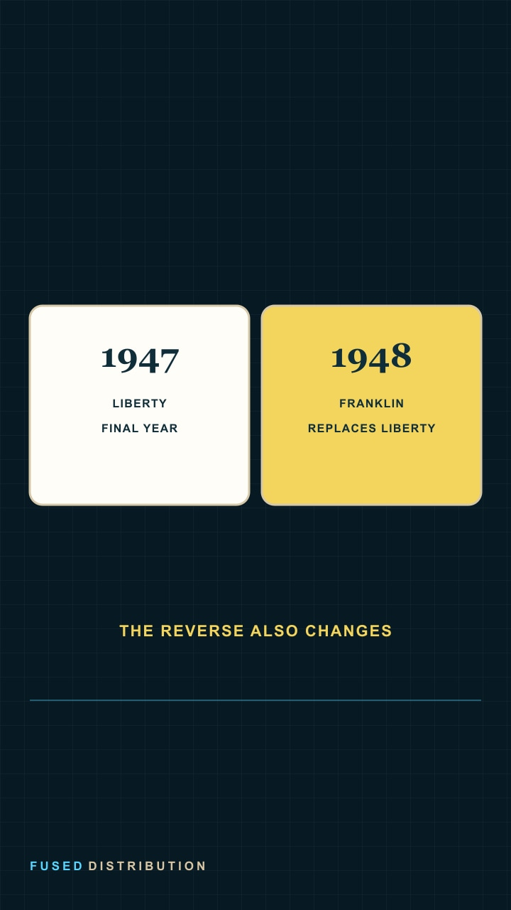
A new half dollar: 1948
sourced explainer graphic, not a coin photograph
Source coins:
Fused-owned blog, reel, and future coin-history graphics; keep the accompanying fact labels and specimen limitations. Owner photo reuse for Fused content; no standalone or public stock redistribution grant.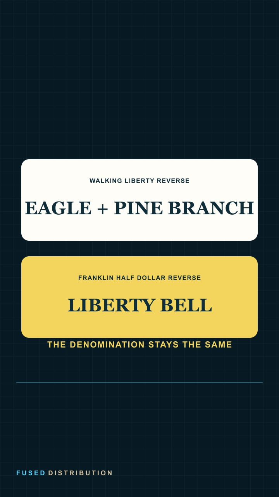
Liberty Bell replaces the eagle.
sourced explainer graphic, not a coin photograph
Source coins:
Fused-owned blog, reel, and future coin-history graphics; keep the accompanying fact labels and specimen limitations. Owner photo reuse for Fused content; no standalone or public stock redistribution grant.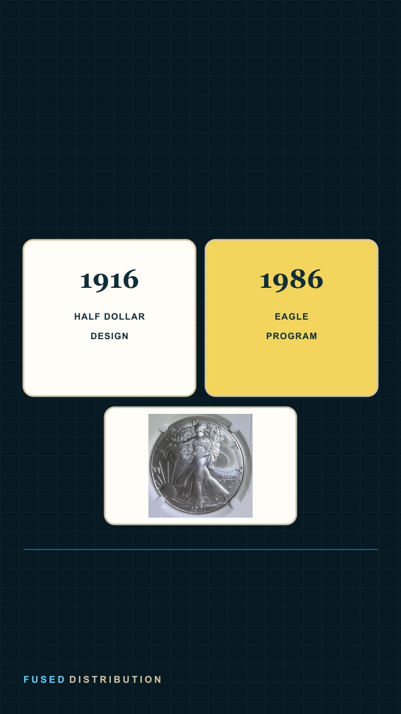
A new program begins: 1986
sourced explainer graphic, not a coin photograph
Source coins: coin-0013
Fused-owned blog, reel, and future coin-history graphics; keep the accompanying fact labels and specimen limitations. Owner photo reuse for Fused content; no standalone or public stock redistribution grant.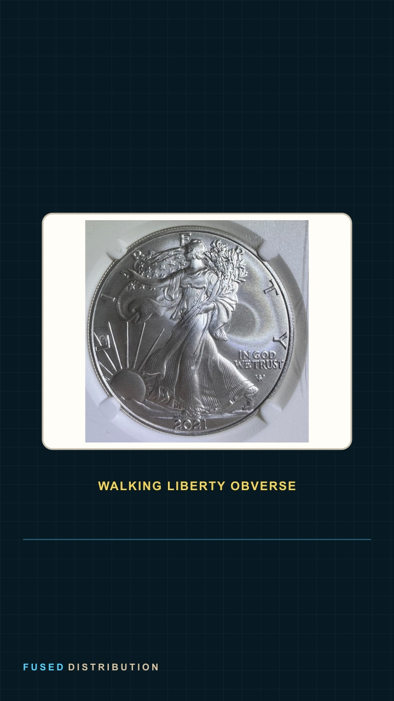
The design returns on silver.
owner coin photograph in verified comparison treatment
Source coins: coin-0013
Fused-owned blog, reel, and future coin-history graphics; keep the accompanying fact labels and specimen limitations. Owner photo reuse for Fused content; no standalone or public stock redistribution grant.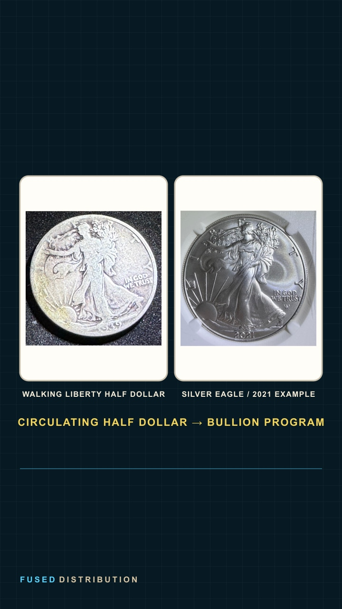
Same obverse, new program.
owner coin photograph in verified comparison treatment
Fused-owned blog, reel, and future coin-history graphics; keep the accompanying fact labels and specimen limitations. Owner photo reuse for Fused content; no standalone or public stock redistribution grant.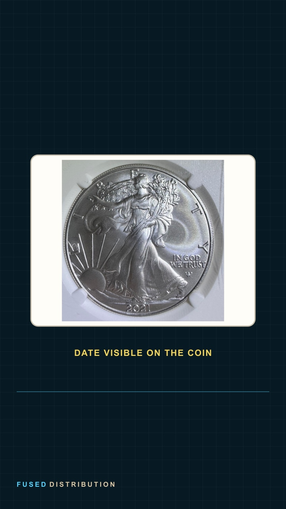
The photographed Eagle: 2021
owner coin photograph in verified comparison treatment
Source coins: coin-0013
Fused-owned blog, reel, and future coin-history graphics; keep the accompanying fact labels and specimen limitations. Owner photo reuse for Fused content; no standalone or public stock redistribution grant.The front stays familiar.
owner coin photograph in verified comparison treatment
Source coins: coin-0013
Fused-owned blog, reel, and future coin-history graphics; keep the accompanying fact labels and specimen limitations. Owner photo reuse for Fused content; no standalone or public stock redistribution grant.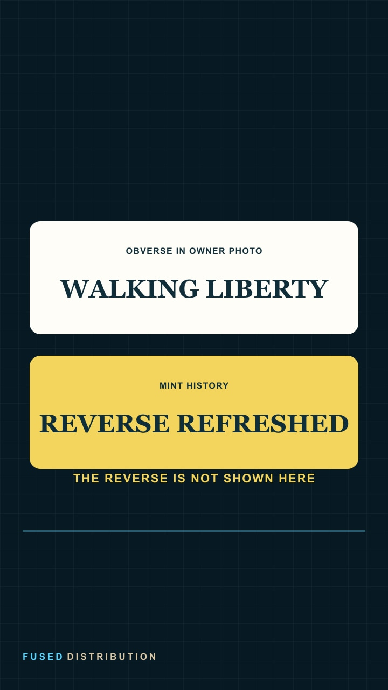
The reverse changes in 2021.
sourced explainer graphic, not a coin photograph
Source coins:
Fused-owned blog, reel, and future coin-history graphics; keep the accompanying fact labels and specimen limitations. Owner photo reuse for Fused content; no standalone or public stock redistribution grant.Different coins. One design lineage.
owner coin photograph in verified comparison treatment
Fused-owned blog, reel, and future coin-history graphics; keep the accompanying fact labels and specimen limitations. Owner photo reuse for Fused content; no standalone or public stock redistribution grant.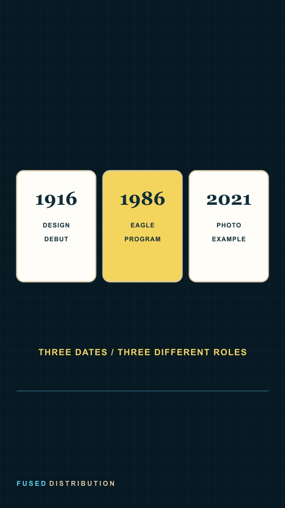
1916 → 1986 → 2021
sourced explainer graphic, not a coin photograph
Source coins:
Fused-owned blog, reel, and future coin-history graphics; keep the accompanying fact labels and specimen limitations. Owner photo reuse for Fused content; no standalone or public stock redistribution grant.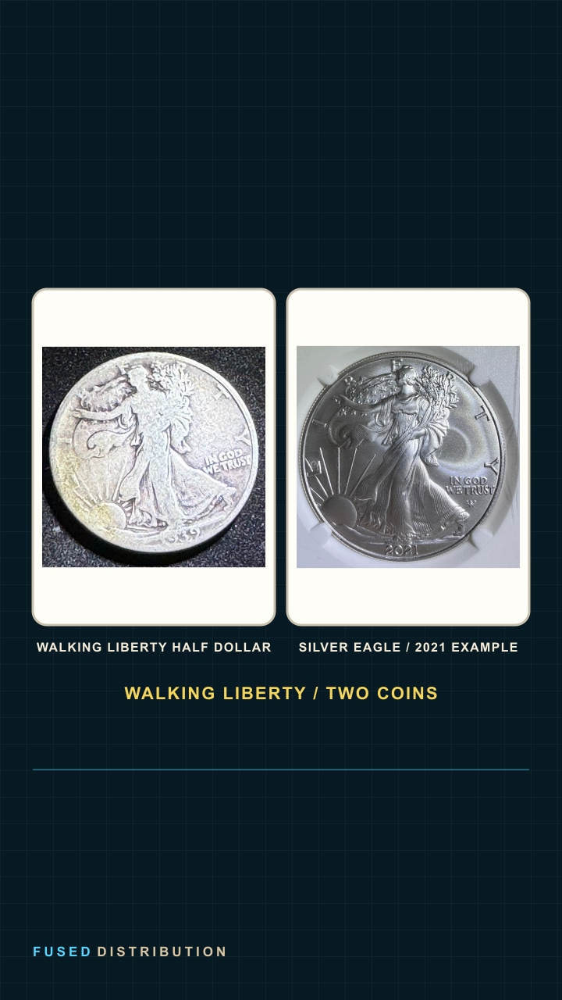
The design carries the history.
owner coin photograph in verified comparison treatment
Fused-owned blog, reel, and future coin-history graphics; keep the accompanying fact labels and specimen limitations. Owner photo reuse for Fused content; no standalone or public stock redistribution grant.